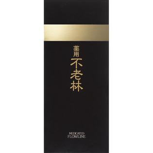
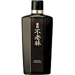

返回列表
产品名称：薬用不老林 頭皮用育毛料

資生堂 薬用不老林 頭皮用育毛料 ＿（医薬部外品）
メーカー 資生堂
JANコード 4901872335183
商品の特徴
抜け毛を防ぎ、髪のすこやかな成長を促します。薄毛を防ぎ、育毛を促進。頭皮をととのえ、ふけ・かゆみを防ぎます。心地よい爽快感があり、頭皮、頭髪を清潔に保ちます。
成分・分量
-
用法及び用量
＜使用方法＞
●朝夕など1～2回程度適量を頭皮につけ、指の腹でよくマッサージしてください。
●シャンプーのあとは、水気をよくふきとってからお使いください。